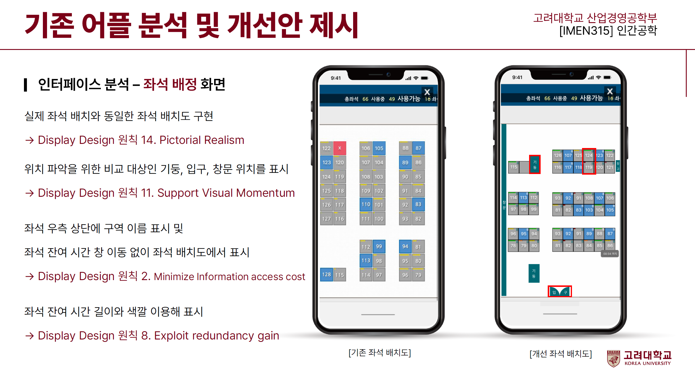
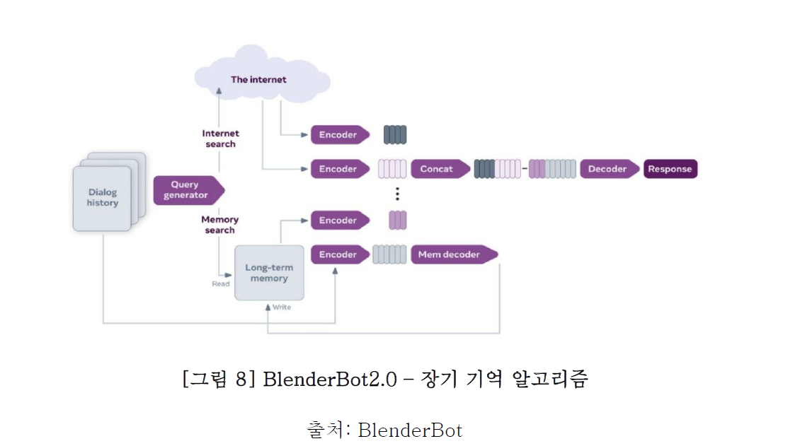
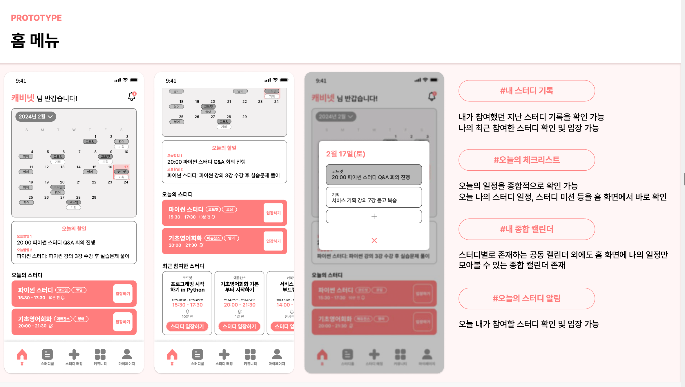

Projects

Scholar's Success Drive: Donation matching service
Project for Human Centered Computing (CS 4875, Fall 2024)
Developed a donation matching platform to provide essential academic supplies to students, teachers, and families facing resource shortages. Designed key features such as Donations Near You, Community Interaction, and Donation Tracking to improve transparency and foster local engagement.

Motion Sickness Related Factors in Autonomous Driving Situation
Project for Experimental Design and Statistical Analysis (IMEN339-00, Spring 2024)
This study analyzes the effects of driving skill, driving speed, and vehicle height on motion sickness levels. A 3×3×2 factorial experimental design was applied to design an experiment using an autonomous driving simulator, and Three-Way ANOVA was conducted to verify main and interaction effects.

KLIB2: Improving UI and User Experience in Library Reservation Systems
Project for Ergonomics (IMEN315-00, Spring 2024)
A UI improvement plan for the KLIB2 library reservation system at Korea University was designed and tested with 30 participants, demonstrating reduced task completion time and increased user satisfaction compared to the existing UI.

Defining UX Factors and Prioritizing Improvements for Chatbot Services
Project for UX and AI (IMEN319-00, Spring 2024)
This study proposes a context management approach using conversation history storage and logical operations, enabling the development of personalized chatbots.

SPAT: Enhancing Online Course Completion through Study Partner Matching
Project for Service Planning Bootcamp (Winter 2024)
SPAT is a study partner matching service that helps increase online course completion rates by forming study groups and providing reminders.